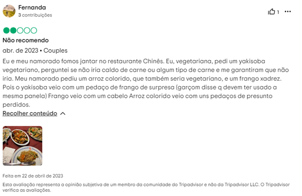

Explorando os tesouros gastronômicos de Blumenau: Os top 3 pokes que você não pode perder!
Prepare-se para uma jornada gastronômica única enquanto exploramos o queridinho que conquistou corações ao redor do mundo: o Poke! Se você já se rendeu aos encantos desse prato havaiano ou está curioso para experimentar, este é o momento perfeito para embarcar nessa aventura culinária. O Poke, famoso por encantar paladares com sua frescura e sabor inigualável, viralizou no TikTok e rapidamente se tornou um favorito entre os amantes de comida de todo o mundo.
Diferente do sushi tradicional japonês, o Poke oferece uma experiência culinária única, combinando ingredientes frescos, como frutas e proteínas, em uma harmonia de sabores que vai encantar seu paladar. E aqui em Blumenau, somos agraciados com verdadeiros tesouros quando se trata de Poke, proporcionando uma variedade de opções que prometem surpreender até mesmo os paladares mais exigentes.
Curioso para descobrir quais são os top 3 Pokes da cidade? Continue lendo para se deliciar com as melhores opções que Blumenau tem a oferecer!
É importante destacar que este post se concentra em restaurantes japoneses que oferecem a opção de Poke em seus cardápios. O Aikau Poke se destaca como uma escolha autêntica nesse aspecto, no entanto, nunca fui conhecer, pois estes já têm meu coração todinho.
Sushi Garden
Em busca do poke perfeito? O Sushi Garden, em Blumenau, é a resposta. Combinando ingredientes frescos e uma apresentação impecável, a escolha do Poke Garden permite que você opte por salmão ou atum marinado no molho clássico, arroz, cebola roxa, sunomono, manga, abacate, crispy de alho poró, nori (alga), cebolinha e gergelim, que se destaca como uma escolha irresistível, pelo preço de R$59,00. Este poke é verdadeiramente gigante, repleto de frescor em cada mordida. Uma característica que me encanta é o nori crocante, que sempre são enviados separadamente, elevando ainda mais a experiência gastronômica. Ah, o suco de kiwi é uma bela combinação para esse poke.
Ah, e não posso deixar de mencionar o sunomono de brinde! Quem me conhece sabe que o Sushi Garden tem todo o meu coração. Costumo pegar o Poke Garden para uma noite de filmes com meu namorado, mas prometo um dia desfrutar do ambiente acolhedor do restaurante para o provar o poke lá mesmo. Sempre que vou lá, acabo pedindo um combinado de sushi e de entradinha shitaki e shimeji na manteiga, mas isso é assunto para outro post.
Poke do Delivery
Sushi Yuzu
No Sushi Yuzu, o poke é chamado de chirashi, destacando-se pela preservação do sabor natural do peixe. Minha escolha favorita inclui salmão, atum e shimeji - sim, sou apaixonada por cogumelos no poke! Nesse, recomendo o drink: mojito.
Uma diferença notável em relação ao Sushi Garden é que podemos escolher até 3 ingredientes, podendo ser 3 proteínas, pelo preço também de R$59,00, com um adicional de R$15,00 para demais ingredientes. A base é composta por arroz, cebolinha, gergelim, nori, e cream cheese. Um pequeno ponto para destacar é que, apesar de solicitar sem cream cheese devido à minha intolerância à lactose, algumas vezes ainda é incluído.
Poke no local
Restaurante Chinês
Por último, mas não menos importante, temos o Poke do famoso Restaurante Chinês. No cardápio deles, sempre opto pela opção 261 que é composta por: Salmão, arroz, abacate, tomate cereja, manga, shimeji, cogumelo paris, repolho roxo, lascas de castanhas de caju e molho havaiano, por R$60,80. É uma boa opção pela combinação de sabores que harmonizam em completa harmonia. Ah, e o brinde é um biscoito da sorte. Para mim, ele está em último lugar, pois é um pouco mais caro e menor do que os outros.
Poke do Delivery
São excelentes opções aqui em Blumenau! O Sushi Garden está localizado na Av. Martin Luther, 900, no bairro Victor Konder, e recebe clientes de segunda a sábado. Já o Sushi Yuzu está situado na rua Curt Hering, 33, no Centro, também aberto de segunda a sábado. E o Restaurante Chinês fica na rua XV de Novembro, 340, aberto de domingo a domingo.
Avaliação no Tripadvisor
Os 3 restaurantes têm a mesma nota: 4,5 com a maioria dos comentários sendo bons, vou deixar um comentário negativo de cada estabelecimento.
Garden
Yuzu
Chinês
Em minha opinião, é válido experimentar e chegar a suas próprias conclusões.